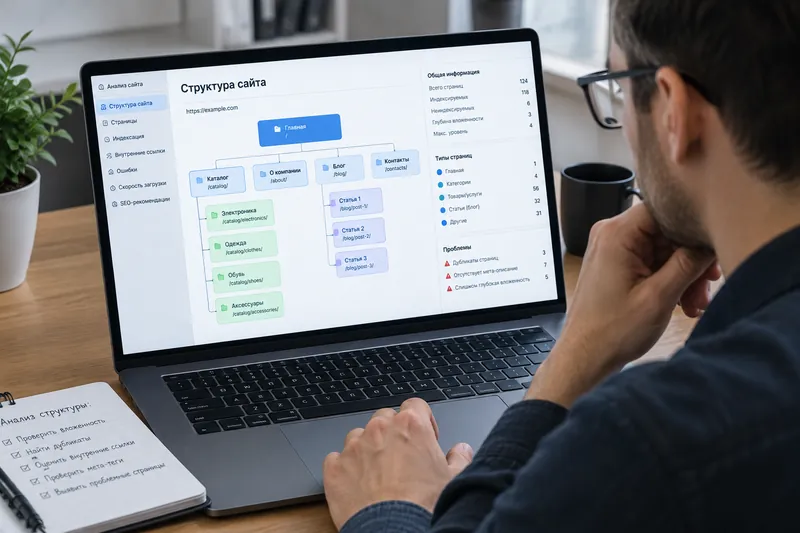

On-page SEO: внутренняя оптимизация
Внутренняя оптимизация (on-page SEO) — это вся работа над самим сайтом: над его структурой, кодом, текстами и техническими элементами страниц. Именно на неё приходится основной объём усилий SEO-специалиста, и именно она даёт наиболее устойчивый и предсказуемый результат.
Структура сайта и URL
Логичная структура — это когда любую страницу можно найти за 2–3 клика от главной, а адрес страницы понятен и человеку, и роботу: /catalog/bicycles/ лучше, чем /index.php?id=482. Такие адреса называют ЧПУ — «человекопонятный урл». Кроме удобства, это напрямую влияет на индексацию: чем сложнее и запутаннее структура, тем труднее поисковому роботу обойти и корректно понять сайт.
Технический аудит и дубли страниц
Частая проблема интернет-магазинов и каталогов — страницы-дубли: один и тот же товар доступен по нескольким разным адресам из-за фильтров, сортировок или вложенности категорий. Робот тратит на них ресурс сканирования впустую и может запутаться, какую версию показывать в выдаче. Решение — настройка канонических адресов (rel="canonical"), корректный robots.txt и файл sitemap.xml, а также устранение битых ссылок и ускорение загрузки страниц.
Мета-теги
<title> и meta description — это то, что пользователь видит прямо в выдаче до перехода на сайт, поэтому от них зависит не только релевантность запросу, но и кликабельность (CTR). Хороший title отвечает на вопрос «что здесь есть и почему это выгодно» — сравните:
- Слабо: «Пластиковые окна — компания ОконПро»
- Лучше: «Пластиковые окна под ключ в Москве — от 8 900 ₽, замер и монтаж за 3 дня»
Заголовки и контент страницы
- Один
<h1>на странице и логичная иерархияh2–h6ниже него; - Уникальный, полезный текст, который действительно раскрывает тему запроса, а не просто содержит нужные слова;
- Списки, таблицы и подзаголовки вместо «простыни» текста — так контент легче сканировать и глазами, и роботом;
- Внутренняя перелинковка — ссылки на связанные страницы сайта, которые помогают пользователю и распределяют «вес» между разделами.
Коммерческие факторы и юзабилити
Для коммерческих сайтов важно закрыть базовые вопросы посетителя прямо на странице: цену, условия доставки и оплаты, контакты компании. Отдельно на позиции влияет удобство использования сайта в целом — быстрая загрузка, понятная навигация и корректное отображение на мобильных устройствах.
Оптимизация изображений
Для картинок важно заполнять атрибут alt (описание для роботов и людей с нарушениями зрения) и использовать современные форматы, например WebP, а также адаптивные изображения через srcset и sizes, чтобы браузер загружал файл подходящего размера под конкретное устройство.
